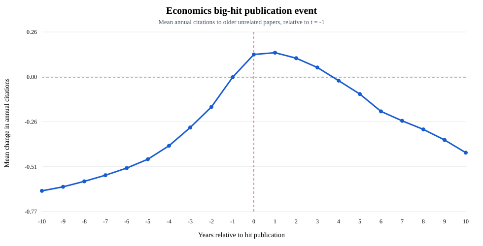

Descriptive, not causal. Hits are author-specific papers with at least 101 lifetime citations and over 50% of the author's economics-portfolio citations. Treatment is hit publication year. Older papers are unrelated when the hit does not cite them. OpenAlex identity, version duplication, and economics-only denominators remain unresolved.

| Event time | Mean citations | Change from -1 | Positive share |
|---|---|---|---|
| -10 | 0.128 | -0.653 | 4.8% |
| -9 | 0.151 | -0.630 | 5.7% |
| -8 | 0.183 | -0.598 | 6.7% |
| -7 | 0.218 | -0.563 | 8.0% |
| -6 | 0.259 | -0.522 | 9.5% |
| -5 | 0.310 | -0.471 | 11.2% |
| -4 | 0.387 | -0.394 | 13.3% |
| -3 | 0.492 | -0.289 | 16.1% |
| -2 | 0.610 | -0.170 | 19.8% |
| -1 | 0.781 | +0.000 | 24.0% |
| +0 | 0.912 | +0.131 | 25.8% |
| +1 | 0.922 | +0.141 | 25.6% |
| +2 | 0.890 | +0.109 | 24.7% |
| +3 | 0.837 | +0.056 | 23.3% |
| +4 | 0.761 | -0.020 | 21.4% |
| +5 | 0.684 | -0.096 | 19.1% |
| +6 | 0.584 | -0.196 | 16.7% |
| +7 | 0.530 | -0.250 | 15.0% |
| +8 | 0.481 | -0.300 | 13.5% |
| +9 | 0.420 | -0.361 | 12.1% |
| +10 | 0.348 | -0.433 | 10.7% |